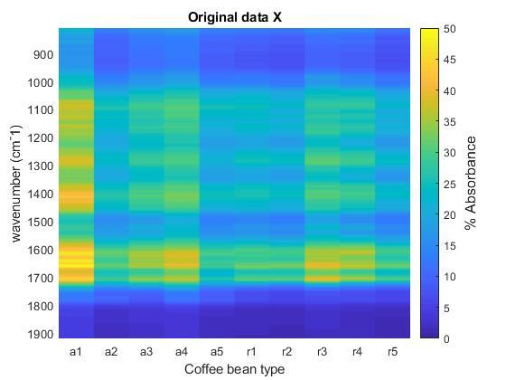
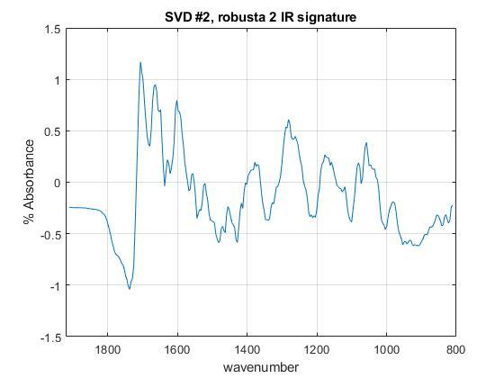

Contents
clear all
close all
Problem 1 Task 1
[wavenumber, arabica1, arabica2, arabica3, arabica4, arabica5, ...
robusta1, robusta2, robusta3, robusta4, robusta5 ] ...
= textread('Problem1_coffee_FTIR_data.txt','%f%f%f%f%f%f %f%f%f%f%f', 'headerlines', 3);
X = [arabica1 arabica2 arabica3 arabica4 arabica5 robusta1 robusta2 robusta3...
robusta4 robusta5];
[U, S, V] = svd(X);
S2 = [];
for i = 1:10
S2(i) = S(i,i);
end
f0 = figure('Name', 'Singular Values');
h1 = semilogy(S2);
grid on
title('Singular values \sigma_p and p singular value')
xlabel('pth singular value')
ylabel('singular values \sigma_p')
xtick_strings = {'a1' 'a2' 'a3' 'a4' 'a5' 'r1' 'r2' 'r3' 'r4' 'r5'};
Dom = S2(1) * U(:,1) * V(:,1)';
Secondary = S2(2) * U(:,2) * V(:,2)';
Tertiary = S2(3) * U(:,3) * V(:,3)';
aaaa = NaN*ones(286,1);
aaa = NaN*ones(1,11);
X2 = [X aaaa];
X2 = [X2; aaa];
aa = [wavenumber; NaN];
Domplot = [Dom aaaa];
Domplot = [Domplot; aaa];
Secplot = [Secondary aaaa];
Secplot = [Secplot; aaa];
Terplot = [Tertiary aaaa];
Tertplot = [Terplot; aaa];
x = 1:11;
y = [wavenumber' 1.9206e+03];
[Xmesh1, Ymesh1] = meshgrid(x,y);
f1 = figure('Name', 'pcolor original X');
h2 = pcolor(Xmesh1, Ymesh1, X2);
h2.EdgeColor = 'none';
cb1 = colorbar;
caxis([0 50]);
set(gca, 'YDir', 'reverse')
title('Original data X')
set(gca, 'XTick', [1.5 2.5 3.5 4.5 5.5 6.5 7.5 8.5 9.5 10.5], 'XTickLabels', xtick_strings);
set(get(cb1, 'YLabel'), 'String', '% Absorbance', 'FontSize', 12);
xlabel('Coffee bean type');
ylabel('wavenumber (cm^-1)');
f2 = figure('Name', 'pcolor Dominant');
h3 = pcolor(Xmesh1, Ymesh1, Domplot);
h3.EdgeColor = 'none';
cb2 = colorbar;
caxis([0 50]);
set(gca, 'YDir', 'reverse')
title('SVD submatrix 1 with \sigma_p = 1169.5113')
set(gca, 'XTick', [1.5 2.5 3.5 4.5 5.5 6.5 7.5 8.5 9.5 10.5], 'XTickLabels', xtick_strings);
set(get(cb2, 'YLabel'), 'String', '% Absorbance', 'FontSize', 12);
xlabel('Coffee bean type');
ylabel('wavenumber (cm^-1)');
f3 = figure('Name', 'pcolor Secondary');
h4 = pcolor(Xmesh1, Ymesh1, Secplot);
h4.EdgeColor = 'none';
cb3 = colorbar;
caxis([0 10]);
set(gca, 'YDir', 'reverse')
title('SVD submatrix 2 with \sigma_p = 42.8749')
set(gca, 'XTick', [1.5 2.5 3.5 4.5 5.5 6.5 7.5 8.5 9.5 10.5], 'XTickLabels', xtick_strings);
set(get(cb3, 'YLabel'), 'String', '% Absorbance', 'FontSize', 12);
xlabel('Coffee bean type');
ylabel('wavenumber (cm^-1)');
f4 = figure('Name', 'pcolor Tertiary');
h5 = pcolor(Xmesh1, Ymesh1, Tertplot);
h5.EdgeColor = 'none';
cb4 = colorbar;
caxis([0 10]);
set(gca, 'YDir', 'reverse')
title('SVD submatrix 3 with \sigma_p = 22.6279')
set(gca, 'XTick', [1.5 2.5 3.5 4.5 5.5 6.5 7.5 8.5 9.5 10.5], 'XTickLabels', xtick_strings);
set(get(cb4, 'YLabel'), 'String', '% Absorbance', 'FontSize', 12);
xlabel('Coffee bean type');
ylabel('wavenumber (cm^-1)');

Task #2
f5 = figure('Name', 'SVD Robusta 2 IR Signature');
g1 = plot(wavenumber, -1*Secondary(:,2));
grid on
title('SVD #2, robusta 2 IR signature');
xlabel('wavenumber')
ylabel('% Absorbance')
xlim([800 1.9206e+03])
set(gca, 'XDir', 'reverse')

Task 3
xmean = [];
for i=1:10
xmean(i) = mean(X(:,i));
end
xm_m = repmat(xmean, length(wavenumber), 1);
D = X - xm_m;
S = 1/(286-1) * D' * D;
[eigVec,eigVal] = eig(S);
mineigVec = min(eigVec);
V_norm = eigVec./mineigVec;
Task 4
TotVar = (eigVal(1,1) + eigVal(2,2) + eigVal(3,3))/(sum(sum(eigVal)))*100;
Echoing all Results etc.
diary vjprob1.txt
echo on
disp('Task 1')
V
S2
disp('Task 2')
disp('Caffeine and chlorogenic acid contents tend to be higher in Robusta compared with Arabica.')
disp('Task 3')
eigVal
eigVec
V_norm
disp('Task 4')
disp('The first three PCs can explain ')
TotVar
disp('Of the total variance')
disp('The reason why five values are negative and the other fiver are positive is that 5 entries directly correspond with each group. Each group will have the same sign across the 5 beans.')
echo off
disp('Task 1')
Task 1
V
V =
Columns 1 through 7
-0.4410 0.4605 -0.4480 -0.4863 -0.3851 0.0367 -0.0400
-0.2821 0.1672 0.3887 0.3499 -0.2680 -0.1205 -0.5182
-0.3271 0.1688 0.0170 -0.1510 0.7831 -0.0553 0.1774
-0.3577 0.3627 0.0414 0.5422 0.0352 -0.2624 0.2941
-0.2632 0.1644 0.5596 -0.1938 -0.0030 0.3233 0.1099
-0.2764 -0.2223 0.0733 0.0042 0.0944 0.6882 -0.2014
-0.2623 -0.3630 0.0252 0.0471 -0.2786 -0.0511 0.5669
-0.3364 -0.2948 -0.5406 0.3890 0.1335 0.1347 -0.2353
-0.3133 -0.4032 0.1451 -0.3634 0.1136 -0.5597 -0.3426
-0.2553 -0.3770 0.1169 -0.0326 -0.2192 -0.0082 0.2551
Columns 8 through 10
0.0384 -0.0474 -0.0356
-0.0299 -0.5129 -0.0071
-0.0244 -0.4279 -0.0997
0.2903 0.4464 -0.0681
-0.5246 0.3322 0.2254
0.5796 0.0970 -0.0207
0.1121 -0.3516 0.5087
-0.4845 0.1072 0.1366
0.1605 0.3099 0.1439
-0.1692 -0.0365 -0.7967
S2
S2 =
1.0e+03 *
Columns 1 through 7
1.1695 0.0429 0.0226 0.0137 0.0089 0.0063 0.0059
Columns 8 through 10
0.0052 0.0051 0.0042
disp('Task 2')
Task 2
disp('Caffeine and chlorogenic acid contents tend to be higher in Robusta compared with Arabica.')
Caffeine and chlorogenic acid contents tend to be higher in Robusta compared with Arabica.
disp('Task 3')
Task 3
eigVal
eigVal =
Columns 1 through 7
833.2564 0 0 0 0 0 0
0 3.1618 0 0 0 0 0
0 0 1.7724 0 0 0 0
0 0 0 0.6588 0 0 0
0 0 0 0 0.2774 0 0
0 0 0 0 0 0.0612 0
0 0 0 0 0 0 0.1374
0 0 0 0 0 0 0
0 0 0 0 0 0 0
0 0 0 0 0 0 0
Columns 8 through 10
0 0 0
0 0 0
0 0 0
0 0 0
0 0 0
0 0 0
0 0 0
0.1202 0 0
0 0.0897 0
0 0 0.0935
eigVec
eigVec =
Columns 1 through 7
0.4126 -0.4298 0.4991 0.4915 -0.3858 -0.0334 0.0280
0.2740 -0.2419 -0.3602 -0.3479 -0.2686 -0.0173 -0.1602
0.3169 -0.1877 0.0046 0.1528 0.7829 -0.1011 -0.0494
0.3360 -0.3784 0.0005 -0.5398 0.0353 -0.0586 -0.2430
0.2543 -0.2316 -0.5382 0.1937 -0.0029 0.2330 0.3366
0.2896 0.1832 -0.0910 -0.0049 0.0941 -0.0295 0.6720
0.2822 0.3527 -0.0657 -0.0509 -0.2780 0.5085 -0.0136
0.3516 0.3288 0.5093 -0.3900 0.1336 0.1367 0.1253
0.3362 0.3699 -0.1872 0.3600 0.1140 0.1427 -0.5756
0.2768 0.3490 -0.1562 0.0293 -0.2188 -0.7951 0.0098
Columns 8 through 10
-0.0256 0.0456 0.0304
-0.4861 0.5251 -0.0745
0.2020 0.4106 -0.0772
0.3086 -0.4331 0.3255
0.0594 -0.3852 -0.4848
-0.2363 -0.0141 0.5975
0.5734 0.3467 0.0637
-0.2674 -0.1429 -0.4612
-0.3222 -0.2773 0.2005
0.2522 0.0014 -0.1807
V_norm
V_norm =
Columns 1 through 7
1.6222 1.0000 -0.9275 -0.9105 1.0000 0.0420 -0.0487
1.0773 0.5629 0.6693 0.6445 0.6962 0.0217 0.2783
1.2460 0.4368 -0.0086 -0.2830 -2.0296 0.1272 0.0858
1.3212 0.8805 -0.0010 1.0000 -0.0915 0.0738 0.4222
1.0000 0.5389 1.0000 -0.3589 0.0075 -0.2931 -0.5848
1.1386 -0.4263 0.1690 0.0090 -0.2439 0.0371 -1.1675
1.1098 -0.8207 0.1221 0.0942 0.7207 -0.6396 0.0236
1.3824 -0.7650 -0.9463 0.7224 -0.3464 -0.1720 -0.2177
1.3219 -0.8607 0.3479 -0.6668 -0.2954 -0.1795 1.0000
1.0882 -0.8120 0.2903 -0.0542 0.5673 1.0000 -0.0170
Columns 8 through 10
0.0526 -0.1053 -0.0627
1.0000 -1.2125 0.1538
-0.4155 -0.9482 0.1593
-0.6349 1.0000 -0.6715
-0.1223 0.8895 1.0000
0.4861 0.0325 -1.2325
-1.1795 -0.8005 -0.1314
0.5501 0.3300 0.9513
0.6628 0.6403 -0.4136
-0.5189 -0.0032 0.3727
disp('Task 4')
Task 4
disp('The first three PCs can explain ')
The first three PCs can explain
TotVar
TotVar =
99.8287
disp('Of the total variance')
Of the total variance
disp('The reason why five values are negative and the other fiver are positive is that 5 entries directly correspond with each group. Each group will have the same sign across the 5 beans.')
The reason why five values are negative and the other fiver are positive is that 5 entries directly correspond with each group. Each group will have the same sign across the 5 beans.
echo off